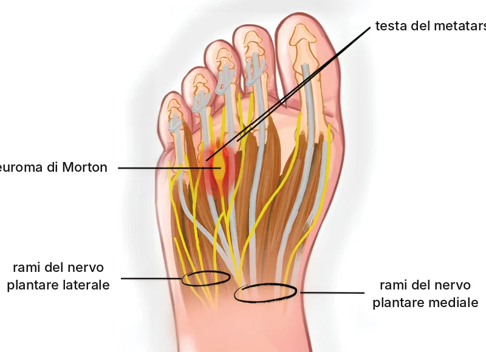

Fra le teste dei metatarsi passano i nervi che raggiungono le dita. Quando uno di questi nervi viene irritato e compresso in modo ripetuto, si ispessisce e diventa doloroso. Il nome parla di «neuroma», ma non si tratta di un tumore: è una neuropatia da intrappolamento con alterazione degenerativa del nervo.[1]
La sede di gran lunga più frequente è lo spazio fra il terzo e il quarto dito.[1]

Come si manifesta
- Dolore urente o a scossa nella parte anteriore del piede, che si irradia verso due dita vicine.
- La descrizione più comune è la sensazione di avere un sasso o una piega del calzino sotto l'avampiede.
- Peggiora con scarpe strette, a punta o con il tacco, e camminando a lungo.
- Migliora togliendo la scarpa e massaggiando il piede: è un elemento molto caratteristico.
- A volte formicolio o intorpidimento nelle due dita interessate.
Quando preoccuparsi
Contatta il medico presto se
- il dolore è comparso dopo un trauma, o non riesci a caricare il peso;
- la zona è gonfia, calda e arrossata, o hai febbre;
- compare una tumefazione dura e che cresce;
- i disturbi riguardano entrambi i piedi e si accompagnano ad altri sintomi generali;
- hai il diabete e noti un cambiamento della sensibilità del piede.
Cosa puoi fare tu
Fai
- Cambia le scarpe: pianta larga, punta ampia, tacco basso. È la misura che più spesso riduce i sintomi.
- Prova un cuscinetto metatarsale posizionato correttamente, che allarga lo spazio fra le teste dei metatarsi.
- Togli la scarpa e massaggia il piede quando compare il dolore, invece di continuare a camminare.
- Per la terapia farmacologica chiedi al medico.
Non fare
- Non continuare a usare scarpe strette nei periodi dolorosi.
- Non affrettarti a fare esami diagnostici senza aver chiesto il parere del tuo medico.
Servono esami?
La diagnosi si fa con la visita: la sede del dolore, la compressione dell'avampiede e i test che riproducono il sintomo sono caratteristici. L'ecografia può confermare l'ispessimento del nervo e viene usata anche per guidare un'eventuale infiltrazione.
È il medico specialista che valuta sulla base della visita se un esame sia necessario.
Le cure, e quanto funzionano
Una revisione sistematica ha raccolto ventidue studi, individuando nove diverse modalità di trattamento non chirurgico: infiltrazione di corticosteroide, infiltrazione di alcol, onde d'urto, radiofrequenza, crioablazione, infiltrazione di capsaicina, tossina botulinica, ortesi e laser.[1]
- Infiltrazione di corticosteroide: ha mostrato una riduzione del dolore statisticamente significativa in tutti gli studi considerati, con un successo nel 50% dei casi a dodici mesi. È il trattamento che gli autori raccomandano.[1]
- Infiltrazione di alcol: risultati promettenti, ma limitati al breve termine.[1]
- Ortesi, capsaicina, crioablazione, tossina botulinica, radiofrequenza e onde d'urto: hanno mostrato miglioramenti statisticamente significativi, ma con limitazioni nella loro applicabilità.[1]
Il dato del 50% a un anno è utile per impostare le aspettative: l'infiltrazione è un trattamento ragionevole e sostenuto dalle prove, e nella metà dei casi il beneficio dura. Nell'altra metà si valutano le opzioni successive, fino alla chirurgia quando il percorso conservativo è stato completato.
Quando serve lo specialista
Per confermare la diagnosi e distinguerla dalle altre cause di dolore all'avampiede, in particolare dalla metatarsalgia e dall'instabilità delle articolazioni delle dita, e per porre l'indicazione a un'eventuale infiltrazione nel momento giusto del percorso.
E, se il dolore ritorna, per discutere, numeri alla mano, quale trattamento sia più idoneo per la tua situazione.
Da dove vengono queste informazioni
- Thomson L, Aujla RS, Divall P, Bhatia M. Non-surgical treatments for Morton's neuroma: a systematic review. Foot Ankle Surg 2020;26(7):736–743. doi:10.1016/j.fas.2019.09.009. Ventidue studi, nove modalità di trattamento.
Scheda aggiornata il 9 novembre 2026. Prossima revisione prevista entro novembre 2028.
Trattamenti citati in questa scheda
Qui sopra c’è scritto se e quando sono indicati. Queste pagine spiegano in che cosa consistono.
Cerca un'altra scheda
Un disturbo, un trattamento, o anche solo il punto che fa male: «formicolio», «tallone», «spalla congelata».